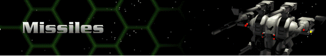

› |
› |
Missiles |

Legend
Ammo – the total ammunition capacity of the Herc for that individual weapon; each weapon is supplied by different ammunition.
Range – the maximum distance, in hexes, over which the weapon can fire.
Rounds – the number of times the weapon can fire per turn; note that some weapons fire bursts of shots with a single firing action.
Energy – total energy cost in battery or reactor power to fire the weapon once.
SDam – the total damage the weapon inflicts on the facing shield side of a target.
ADam – the total damage a weapon inflicts on the target’s armor if no shields are up.
Tech – the Technology Level at which the weapon is acquired.
| Missile Weapons | Description | Ammo | Range | Rounds | Energy | SDam | ADam | Tech |
|---|---|---|---|---|---|---|---|---|
| SP Missile Launcher | A cheap, long-range missile launcher, the Self-Propelled still inflicts massive damage on unshielded foes. The SP can fire indirectly. | 10 | 30 | 1 | 0 | 0 | 50 | 0 |
| SG Missile Launcher | The Self-Guided improves on the SP’s capabilities with tremendous accuracy at long range. With a self-guidance package, the SG is a deadly weapon. | 10 | 30 | 1 | 0 | 0 | 75 | 0 |
| MY Rocket Launcher | The Minimum Yield uses a saturation missile system loaded with numerous mini-rockets to bombard an area three hexes in diameter. | 6 | 20 | 1 | 0 | 0 | 50 | 1 |
| Jihad Missile System | Developed originally as a “last resort weapon,” this missile launcher fires a huge single-shot missile that can devastate enemy units. | 1 | 2 | 1 | 0 | 0 | 160 | 1 |
| Micro Missile Launcher | This rapid-fire missile launcher requires no power and is cheap enough to carry on small Hercs. It cannot fire indirectly. | 24 | 15 | 3 | 0 | 0 | 30 | 2 |
| SP2 Heavy Missile Launcher | This is merely an advancement of the SP Missile Launcher that fires a more effective missile with twice the yield of the SP missile. | 8 | 30 | 1 | 0 | 0 | 100 | 3 |
| Katyusha-Z Rocket System | Named after an old-Earth weapon, this rocket launcher can cover a large area with rockets to damage numerous enemy units at once. | 6 | 30 | 1 | 0 | 0 | 50 | 4 |
| SPX Rapid Missile System | Continuing advancement of missile technology provides the capability to fire SP class missiles rapidly and accurately. | 20 | 30 | 4 | 0 | 0 | 48 | 6 |
| Saturation Missile Launcher | A more powerful version of the MY rockets, this system can devastate a large area with a single shot, which makes it a fearsome weapon. | 5 | 25 | 1 | 0 | 0 | 75 | 6 |
| Hunter-Killer Missile Launcher | The H-K Missiles track and home on their assigned target with relentless precision. | 8 | 30 | 1 | 0 | 0 | 200 | 7 |
| H-K Rapid Missile System | Firing slightly smaller versions of the fearsome Hunter-Killer missile, this weapon can deliver four missiles to a target in seconds. | 16 | 30 | 4 | 8 | 0 | 80 | 9 |
| Heavy Saturation Rocket System | This system essentially delivers the punch of the Hunter-Killer missiles over a wide area with a single firing. | 4 | 25 | 1 | 0 | 0 | 150 | 10 |
| HOG Missile Launcher | This acronym is short for “Hammer of God.” Though a last-ditch weapon, none delivers a more powerful single blow. | 1 | 2 | 1 | 0 | 0 | 1200 | 11 |
| Rapid Saturation Rocket System | Essentially a rapid-fire version of the SPX using Saturation missiles. | 8 | 30 | 2 | 0 | 0 | 135 | 13 |